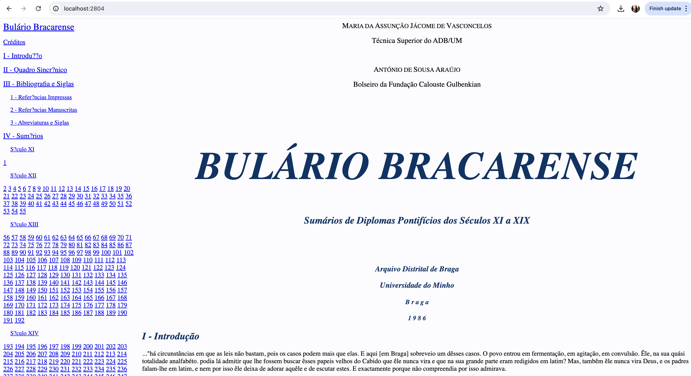

Neste documento, descreve-se a criação de containers Docker como uma forma de encapsular aplicações web de modo a facilitar a sua distribuição e gestão quando em execução.
O tutorial começa com exemplos simples de websites estáticos que vão evoluindo até aplicações complexas com vários serviços a ter que serem orquestrados.
A versão HTML+CSS do Bullarium Bracarensis resultou de um trabalho final de uma UC de projeto, designada Opção III, lecionada à antiga Licenciatura em Engenharia de Sistemas e Informática, por José Luis Santos.
Neste exemplo, decidiu-se aproveitar um website estático interessante e encapsolá-lo num container Docker que o pudesse servir por HTTP.
Para isso, na imagem Docker a criar é preciso incluir, além das páginas HTML e das folhas de estilo CSS, um servidor web. Qualquer servidor serve, se bem que a configuração de cada um poderá ser diferente.
Nesta primeira versão foi usado o nginx.
FROM nginx
COPY . /usr/share/nginx/html
Na primeira linha indica-se a imagem de base que será usada, neste caso, a imagem do nginx.
A seguir copiam-se os ficheiros que constituem o website para a pasta a partir da qual o nginx serve os conteúdos, neste caso a pasta é /usr/share/nginx/html.
Para colocarmos o container em execução basta saber que o servidor web responde na porta interna do contaier com o identificador 80. Vamos mapeá-la numa porta externa, por exemplo 2804:
$ docker run -d -p 2804:80 --name bb engweb2024/bb
Podemos observar o container em execução: docker ps.
Para termos um container com o apache só temos de alterar a imagem base e mudar a pasta onde se coloca o website.
FROM httpd:latest
COPY . /usr/local/apache2/htdocs/
Colocamos em execução om uma linha de comando semelhante, uma vez que o apache responde também na porta 80 interna:
$ docker run -d -p 2804:80 --name bb engweb2024/bb_apache
Podemos observar o container em execução: docker ps.
CONTAINER ID IMAGE COMMAND CREATED STATUS PORTS NAMES
44611bca30f4 engweb2024/bb_apache "httpd-foreground" 9 minutes ago Up 9 minutes 0.0.0.0:2804->80/tcp bb
E depois de algumas interações com o website podemos observar os seus logs:
192.168.65.1 - - [28/Apr/2024:17:35:42 +0000] "GET / HTTP/1.1" 200 293
192.168.65.1 - - [28/Apr/2024:17:35:42 +0000] "GET /bbtoc.html HTTP/1.1" 200 40108
192.168.65.1 - - [28/Apr/2024:17:35:42 +0000] "GET /bbcts.html HTTP/1.1" 200 710320
192.168.65.1 - - [28/Apr/2024:17:35:42 +0000] "GET /bbtoc.css HTTP/1.1" 200 1167
192.168.65.1 - - [28/Apr/2024:17:35:42 +0000] "GET /bbcts.css HTTP/1.1" 200 851
192.168.65.1 - - [28/Apr/2024:17:35:43 +0000] "GET /favicon.ico HTTP/1.1" 404 196

Para termos um container com o python temos de configurar mais algumas coisas.
FROM python
WORKDIR /usr/src/app
COPY . .
CMD ["python", "-m", "http.server", "80"]
O comando WORKDIR permite definir qual a pasta dentro container que será o alvo por omissão dos comandos seguintes, neste caso, definimos a pasta /usr/src/app que é onde o servidor web do python irá procurar as páginas do website.
A seguir, copiamos o nosso website. O primeiro . indica a pasta onde está a Dockerfile e o segundo . indica a pasta definida no WORKDIR.
Como o servidor web é um módulo python que tem de ser colocado em execução, precisamos de executar uma linha de comando com vários argumentos. A forma de o fazer é com o comando CMD seguido de uma lista com os argumentos na forma de string.
Depois de construirmos a nossa imagem, podemos colocá-la em execução como um container com uma linha de comando semelhante às anteriores, uma vez que configuramos o servidor web do python para responder na porta 80 interna:
$ docker build . -t engweb2024/bb_python
$ docker run -d -p 2804:80 --name bb engweb2024/bb_python
Podemos observar o container em execução: docker ps.
Apresentam-se a seguir alguns exemplos de complexidade crescente para aplicações web desenvolvidas com o nodejs.
Esta é aplicação web mais simples, materializada num servidor que apenas responde com uma mensagem de texto.
var http = require('http')
http.createServer(function (req, res) {
res.writeHead(200, {'Content-Type': 'text/plain; charset=utf-8'});
res.end('Olá turma de 2024! Esta é a versão 3 do servidor...');
}).listen(7777);
console.log('Servidor à escuta na porta 7777...')
Para encapsular este serviço num container docker criou-se a seguinte especificação:
# Indicamos a imagem de base
FROM node
# Criamos a pasta de trabalho dentro da imagem
WORKDIR /app
# Copiamos a nossa app para lá
COPY server1.js .
# Expomos a porta em que irá correr
EXPOSE 7777
# Indicamos como arrancar a aplicação
CMD [ "node", "server1.js" ]
O json-server é um utilitário interessante para criar API de dados em pouco tempo, possibilitando a rápida demonstração e teste de ideias. Está desenvolvido em nodejs e pressupõe que a base de dados está num ficheiro JSON seguindo uma determinada estrutura.
Exemplo da base de dados que se irá usar (aqui apenas se colocou um registo por coleção):
{
"alunos": [
{
"id": "A1510",
"nome": "ADEMAR FONTES DE MAGALHAES GONCALVES",
"dataNasc": "1999-4-19",
"curso": "CB8",
"anoCurso": "5",
"instrumento": "Guitarra"
}],
"cursos": [
{
"id": "CB1",
"designacao": "Curso Básico de Clarinete",
"duracao": "5",
"instrumento": {
"id": "I1",
"#text": "Clarinete"
}
}],
"instrumentos": [
{
"id": "I1",
"#text": "Clarinete"
}]
}
Segue-se a especificação para encapsular o json-server:
# Use a imagem nodejs como base
FROM node
# Defina a pasta de trabalho como /app
WORKDIR /app
# Copie a BD para o diretório de trabalho
COPY db.json .
# Instale as dependências
RUN npm install json-server -g
# Exponha a porta 3000
EXPOSE 3000
# Defina o comando padrão a ser executado quando o container for iniciado
CMD ["json-server", "--watch", "db.json", "--port", "3000", "--host", "0.0.0.0"]
Para colocar em execução e testar podemos fazer:
$ docker build . -t engweb2024/jserver_musica --no-cache
$ docker run -d -p 3000:3000 --name musica engweb2024/jserver_musica
$ docker logs musica -f
O último comando permite-nos observar o que aconteceu no container quando se tentou colocar em execução:
JSON Server started on PORT :3000
Press CTRL-C to stop
Watching db.json...
( ˶ˆ ᗜ ˆ˵ )
Index:
http://localhost:3000/
Static files:
Serving ./public directory if it exists
Endpoints:
http://0.0.0.0:3000/alunos
http://0.0.0.0:3000/cursos
http://0.0.0.0:3000/instrumentos
Neste exemplo, vamos criar um container para uma aplicação web com vários serviços: uma aplicação em node que tem a sua persistência de dados numa base de dados em MongoDB e como tal necessita dum servidor mongo.
Nesta tipo de situações, uma especificação em Dockerfile não é suficiente.
Precisamos de criar uma orquestração de serviços usando o docker-compose.
A aplicação que iremos usar é a que faz a gestão de entregas de projetos, e vamos apenas isolar a sua API de dados.
Para se fazer uma orquestração é necessário que cada serviço tenha a sua imagem que depois são combinadas através da orquestração.
No caso do mongo, iremos usar a última imagem disponível no Hub do Docker. Para a aplicação em node, vamos criar a imagem recorrendo à seguinte especificação:
FROM node
# Create app directory
WORKDIR /usr/src/app
# Install app dependencies
COPY package*.json ./
RUN npm install
# Copy app source code
COPY . .
#Expose port and start application
EXPOSE 2204
CMD [ "npm", "start" ]
A seguir especificamos a orquestração de serviços:
version: "2"
services:
web:
container_name: gentregas-api
image: engweb2024/gentregas
ports:
- "2804:2204"
depends_on:
- mongo
links:
- mongo
mongo:
container_name: mongo-server
image: mongo
Nesta especificação tomaram-se as seguintes decisões: